ClothCall: Discreet Clothing Inspection for Blind Adults
Mar. 2026 – Current
Addis Ababa, Ethiopia & Daejeon, South Korea
A native Android app that detects clothing stains and fading for totally blind adults in Ethiopia, through a phone-call interaction so the report stays private.
- Ran a formative study with five blind participants in Ethiopia, in Amharic, which narrowed scope to stain and fading detection and surfaced a preference for a trusted person's judgment over AI analysis alone.
- Led development of the Android app in Kotlin and Jetpack Compose, using a vision-language model.
- Built a trusted-person calibration: a caregiver sets a reference photo and tolerance level, and the app refers to them by name instead of giving a generic AI output.
- Designed a phone-call interaction so the user holds the phone to their ear and hears the result privately.
- Co-authoring a paper on the project's design contributions.
Kotlin
Vision-language models
Accessibility
Field study
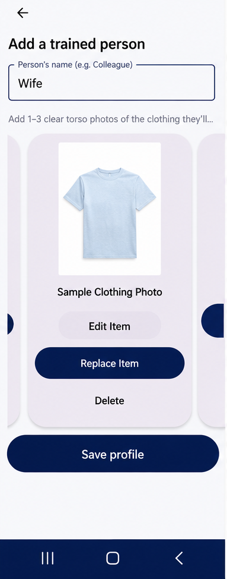
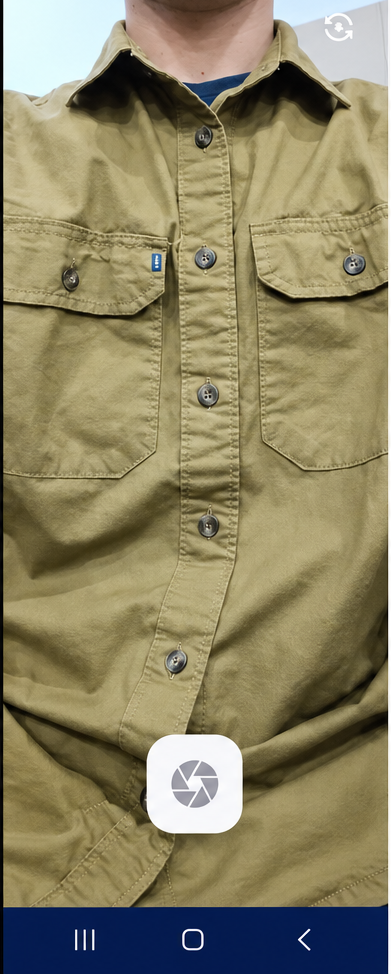
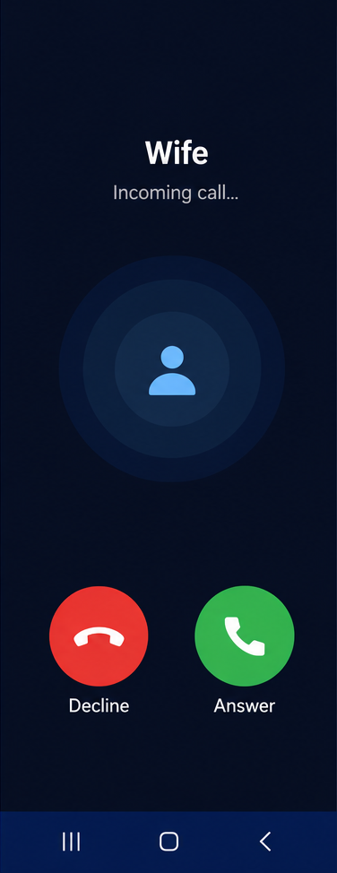
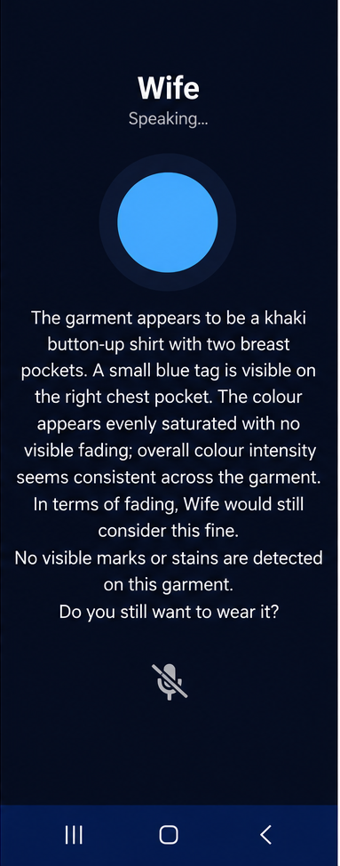
Wizard-of-Oz Mobile Automation Agent for Older Adults
Oct. 2025 – Mar. 2026
IC Lab, KAIST
Built the Android app system for a Wizard-of-Oz agent: a floating chat overlay that gives older adults voice and text guidance and structured choices on screen.
- Built a wizard console on a FastAPI backend, so a human operator guides users in real time by picking steps and choice templates instead of typing freely.
- Used the system to run the user study underlying an IMWUT manuscript.
- GitHub repo
Android
Kotlin
FastAPI
Wizard-of-Oz
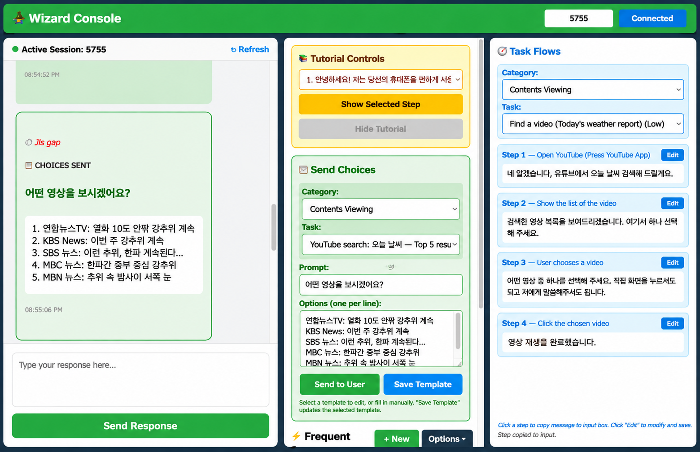
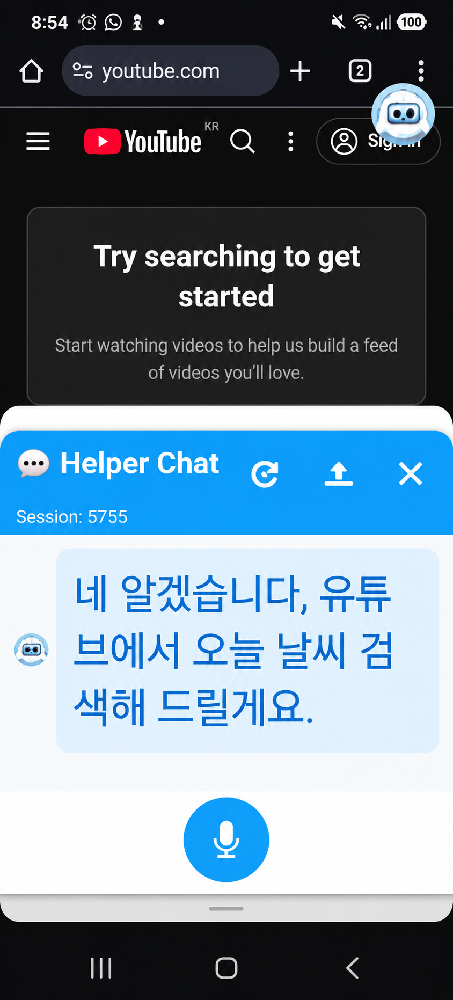
RAG-Based Q&A Assistant for Older Adults on YouTube
Jul. 2025 – Aug. 2025
IC Lab, KAIST
Prototyped a RAG-based Q&A assistant that gives older adults in-app help on YouTube, combining semantic FAQ retrieval with a small-LLM fallback and a chat overlay built as a Chrome extension.
- Used MiniLM embeddings and ChromaDB over 30 curated FAQs, with FLAN-T5-small as the fallback, served through FastAPI.
- Evaluated response time of FAQ retrieval versus the LLM fallback.
- Demo · GitHub repo
RAG
ChromaDB
FastAPI
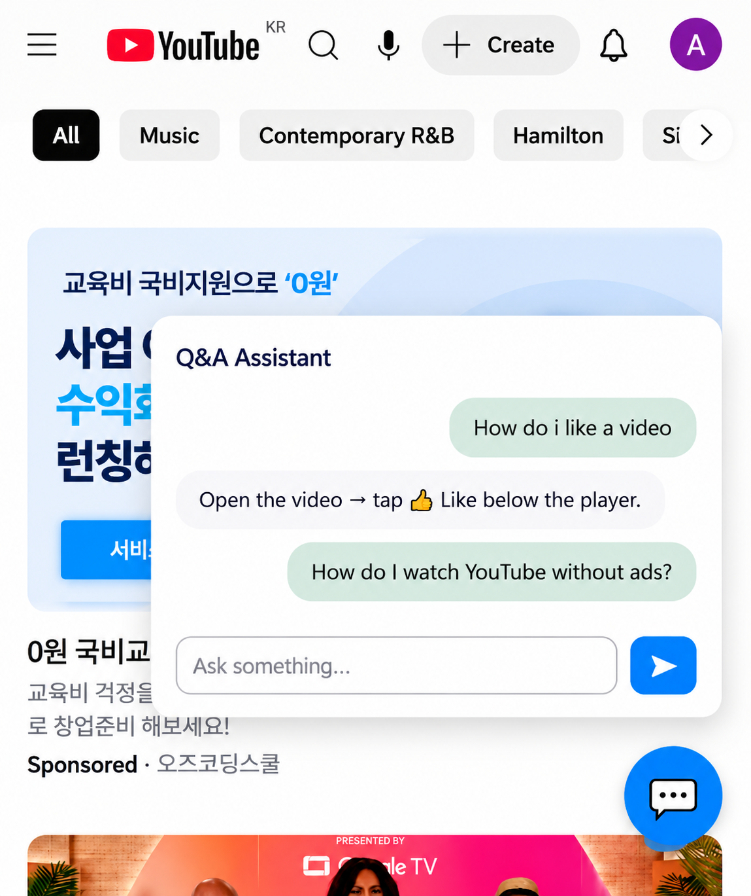
GrabNGo Mobile App
Sep. 2024 – Dec. 2024
Introduction to Software Engineering, KAIST
Built the mobile app front end for a campus convenience store checkout system where customers walk in, shop, and walk out without a checkout line.
- Implemented registration, sign-in with password recovery, a welcome screen after face authentication, a live virtual cart, and the payment screen at walkout.
- Paired with the backend team to debug authentication and cart tracking, and tested usability.
- Demo
Mobile
Front-end
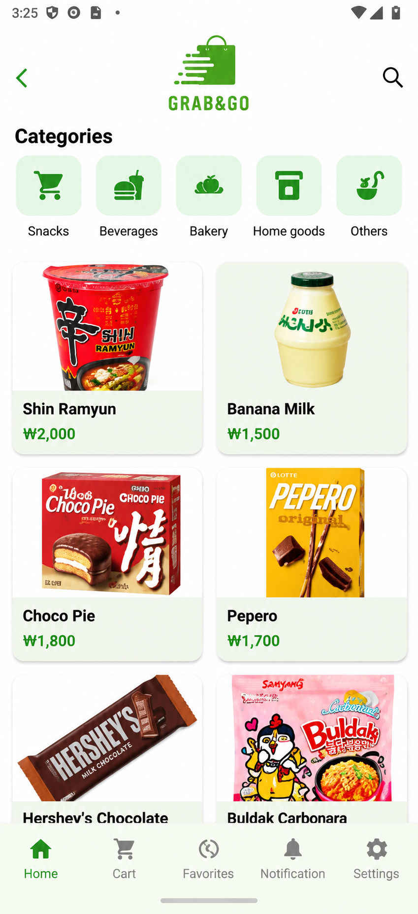
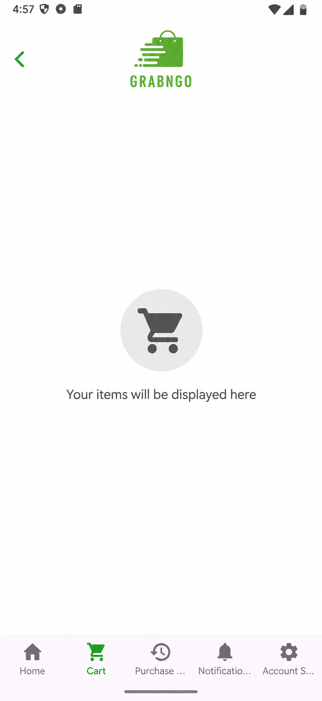
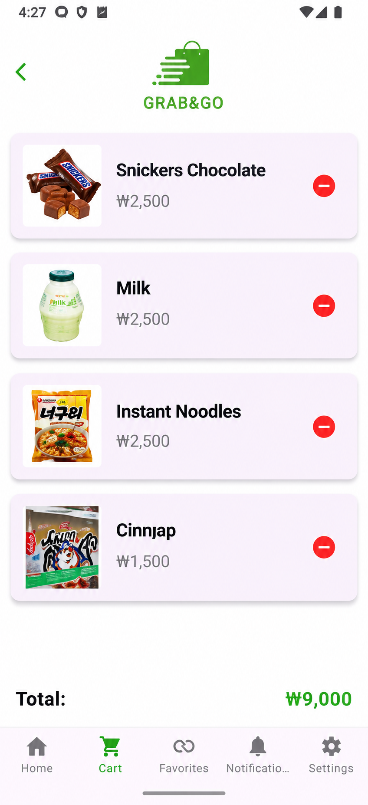
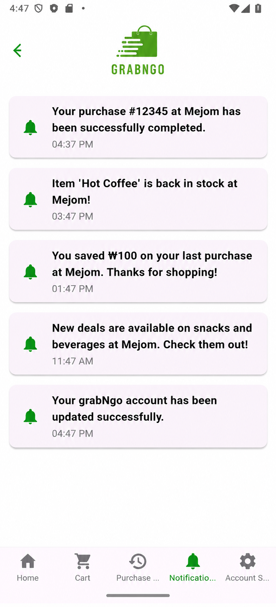
Modelling Reorganisation and Recovery of Neural Circuits After Injury
Jul. 2026 – Aug. 2026
University of Leeds, School of Computer Science
Built and validated a staged Python model, from a linear control oscillator to a ten-unit neuron chain.
- Chose timesteps by self-convergence and checked the code against the control system's analytic solution.
- Modelled injury as a cut connection and as a reduced drive current, then compared recovery in each.
- Internship report
Python
Dynamical systems
FitzHugh–Nagumo